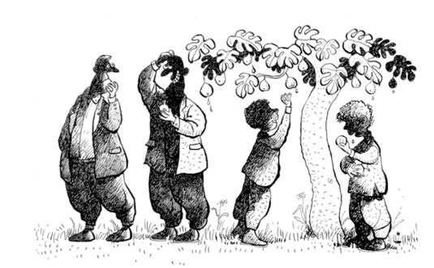

RAMAZAN AMA BİZ SEFERÎYİZ
Bursa’nın türbesi kadar yeşili de meşhurdur. Ramazan ayındayız, Yeşil Bursa’da.
En yeşilinden meyve bahçeleri de civanımın muhitinde, ondan soruluyor. Mahalle muhtarı evlere, Şerif’im bahçelere evrak veriyor.
Evdeyiz. Okul cinsinden zararsız ama keyfi de pek olmayan konular havada uçuşuyor. Babam öğretmen olmasına rağmen annem kadar okul işini kurcalamazdı evde. “Elbet bir diploma da bizim oğlana verirler” der, bu işlere fazla kafa yormazdı. Ya da akşama kadar okulda burnuma kadar ilim irfan dolup evde kafa dinlediğimi sanıyordu. Annem her Allah’ın günü, “Oğlum, bugün de mi ödev yok? Bu nasıl okul?” diye diye ömrünü eğitime vakfetmiştir sayemde.
Gene sıradan günlerden biri; vur tut on beş dakika defter kitap kurcaladım, baktım ev çevremde dönmeye başladı yaz gününde. Yaz tatilinde yapılsın diye verilen ödevler de bir başka olur ki başa gelmeyince tadı bilinmez.
Erdoğan Amcam âdetten olduğu üzere, “İftara gelin Ali’m” diye davet etmiş. Babam da kabul etmiş. Bu davet haberi yayılınca Ramazan’da seferî olmanın keyfi içime yayıldı. Bir keyif ki sormayın. O zamanlar yapılacaklar sınırlı; duvara tırmanmanın kırk çeşidi dışında genelde bahçe talanı ve mahalle maçlarından ibarettir. Maçın ve talanın hası da civanımın muhitinde döner ki...
Hafta sonu falan yok, çocuğa her gün bayramdır temmuz sıcağında. Oruca başlanıyor, Allah ömür verirse akşamın ortasında iftar. Bir kere tuttum oradan biliyorum, top sesini duyduğumda buharlaşmak üzereydim, yalak görmüş buzağı gibi sürahiye saldırdığımı hâlâ hatırlarım. O zamanlarda ben evde bile seferîydim.
Nacar ailesi olarak davete icabet hâlindeyiz. Belediye otobüsü tıklım tıkış, millet birbirine iftardı, sahurdu, seferler hâlinde. Çekirge’de indik. Dizildik tespih gibi peş peşe. Vardık sokağın başına. Mehteran dönemi olsaydı yiğidim başında, durakta karşılardı bizi.
Birbirini gören yiğitlerin karşılaşmalarında olduğu gibi sarmaş dolaş hâlde iki çift lafın belini kırdık ayaküstü. Babam, beş kez geldiğimiz için artık bu sefer yolu bulabildi. Şerif’le ben sokakta kaldık; babam, annemi ve Aytül’ü alıp emin adımlarla civanımın evine doğru yürüyüşe geçti.
Şerif’im fena hâlde oruçlu. Ben de malum o kadar yol gelmişim, seferîyim. Erdoğan Amcamlar Ramazan’da silme oruçlu olur genelde. Bizde de annem tek başına silme oruçlu olurdu. Babam da, “Bugün ben de oruçluyum!” diye çıktıydı evden. Babam başında, ortasında -belirli günlerde- tutardı da bugün o gün mü bilemeyip,”Allah’ın lütfü” deyip sustum duyunca.
Şerif’imle mahalleyi şöyle bir harmanladık. Çocukların bir kısmı aynı cevvallikte, kalanı oruç nedeniyle hafif su kaynatmaya başlamış, gölgeliklerde tünemiş durumdalar. Söz döndü dolaştı, “Yav, Şerif’im ne iyi ettiler de zamanında atomu parçaladılar! Bize de konuşacak konu çıktı”ya gelecek değil, hâliyle biz de bahçe talanı ve meyve hasadı konusuna geldik ister istemez. Ama malum civanım oruçlu; talan, bir yerde iftariyelik olacak.
Şöyle bir sustu, sonra saçını başını kaşıdı civanım. Talandan gelecek günahın oruçtan gelecek sevapla ne kadarının temizleneceğini mi, yoksa bu konu Erdoğan Amcamın kulağına gider diye mi düşündü çıkartamadım. Konu hassas olduğundan Şerif’imin ferasetine bıraktım. Sonra anlaşıldı suskunluğun hikmeti; “Doburca’nın aşağısında erik, kiraz var” dedi, “Erikler kırmızı olmuş, kirazlar da felaket, aha ceviz kadar!” diye lafı bağladı. “Ayva da var ama hafif kelek hâlâ” manasındaki bakışını da ben gözlerinden belli belirsiz anladım. Yeşil erik ve ayva... Şerif, hayatta on paralık günah topladıysa bunun dokuz parası bu iki nebatın başınadır.
Ben seferî durumda olduğumdan misafire söz düştüğü kadarıyla bulduğumu yemeye hazırlanıyorum da civanımın “iftariyelikleri napsak” derdi ister istemez beni de gerdi. Civanım su kaybından bazı detayları göremeyebilir diye de bunu civanıma söyledim.
Plan belli; her ne kadar hava normal bir çocuğun dışarıda güneşe karşı bu kadar dik durumda gezmesine elvermese de bahçeye gidilecek. Tam sefere çıkan askerlerin haklı gurur ve metaneti bakışlarımıza oturmuştu ki babamla Erdoğan Amcamın emin adımlarla bize doğru gelmekte olduklarını gördük. İkimiz de ufaktan yutkunduk, planımızı bağrımıza bastık. Erdoğan Amca hatırımı sordu, bakışlarımdaki ve sesimdeki canlılıktan seferî olduğumu anladı, saçımı başımı okşadı. Her geçen gün biraz daha büyüdüğümüz konusu bir kere daha işlendi.
Babam, “Ali’m” dedi, “napalım, şöyle bir yürüyelim mi bahçelere? Hem zaman da geçer, iftara doğru geliriz.” Şöyle bir gezelim lafıyla iftara doğru döneriz arası nerden baksan dört saat. Güneş tam tepede. Neyse, Erdoğan Amca ve babam önde, biz iki adım arkada, düştük yola; istikamet bahçeler. Babam da bugün oruçlu olduğu beyanında bulunduğundan Erdoğan Amcamın içi rahat, çünkü bağ bahçe işinde babam da göz hakkına sonuna kadar inananlardandır, söylemiştim. Toprak hafif rüzgârda tozuyor. Patikalar kıvrım kıvrım. Sağımız solumuz ufaktan ağaçlanmaya, ağaçlar meyvelenmeye başladı. Şerif göz ucuyla dallardaki emanetlere, ben de Şerif’ime bakıyorum. “Napalım?” manasında bakıştık. Allah kerimdir şeklinde bir sessizlik oldu.
Böyle durumlarda, hele iki adım önde Erdoğan Amca yürüyorsa mübarek Ramazan ayında, metaneti elden bırakmamak gerekir. Doğruluk, helal ve haram konularına girip de dinlemek zorunda kalınırsa bu sıcakta ayrı bir etki yapar ki akıldan gayrı müsella olmanın bir başka şeklidir. Biz de artık on bir yaşındayız ki, bizi de bağlayan konular bunlar.
Bir bahçe çıktı önümüze, sanki dünyaya cennetten emanet... Breh breh... İncirden ayvaya, üzümden elmaya, ne kadar yasak meyve varsa dallarda. Anında kulaklarımız dikildi. Babamın gözleri ışıldadı. Erdoğan Amcam rehber edasıyla, “Falancalardan falanın bahçesi” dedi. Söylerken sanki göğsü kabardı gibi geldi bize. Bahçe talanını, çalıp çırpmayı sevmediğinden yüzündeki manevi hazzı gördük ve bahçenin yalnızca bakmalık bir bahçe olduğunu anladık.
Bahçe büyük, mecburen bir tarafından girdik diğer tarafından çıkacağız. Sağımız solumuz meyveye kesmiş, her adımda amel defterimiz kabarıyor ki... Hava otuz beş derece, cırcır böceklerinin sesleri... Biz adımları ağırdan almaya başladık. Bir baktık babam da ufak adımlar atıyor. Erdoğan Amcam önde, biz on adım kadar geride, gene uygun adım gidiyoruz.
Ufaktan dalların hatırını sormaya başladım ben. Şerif de inceden iftarlıkları tişörtün içine doldurmaya başladı. İncirleri bir tarafa doldurmak olmaz, anında yemek lazım; Şerif katı olanları seçiyor mecburen. Erdoğan Amcam bahçenin tarihini de anlatmaya başladı; geçen yıl bazı ağaçları budamışlar, birkaç da fidan ekmişler, falanca amca gözü gibi bakıyormuş... Allah var, biz de gözümüz gibi bakıyoruz dallara.
Yalnız Şerif’le bir şey dikkatimizi çekiyor; babamın da ağzı burnu oynamaya başladı. Allah Allah! “Seferî de değilim Erdoğan’ım, bugün tutmayacağım da ne zaman tutacağım” falan da dediydi gezintiye çıkmadan önce. Unuttu zahir dedik. Şerif de anladı, babam bahçe turuna çıkabilmek için işi baştan sıkı tutmuş. Ben de şaşırdıydım zaten, babamın seferîlik konusunda ne kadar hassas olduğunu bildiğimden... Bir yandan incir soyuyor bir yandan bağ bahçe sahiplerine hayır duası edip takdirlerini söylüyor. Ancak bunları söylerken inciri yutmadan konuşmuyor. Öyle de hassas davranıyor. Yani bahçe sahibinin aldığı dua değil kendini, yedi sülalesini o gün cennetlik etmediyse daha önce işledikleri günahların çokluğundandır.
Bir nevi bağ bahçe, oruç bozumunun ortasındayken Erdoğan Amcam aniden durdu, şöyle bir geriye dönünce de ne görsün! Civanım ve ben birer dalın boynuna çökmüş hasattayız, babam da yeni soyduğu inciri ağzına tıkmakta. In ın ın nıın! Durumun sıvanır bir tarafı yok, her şey gün gibi ortada. En masum benim. Zaten “Ben yerim arkadaş” diye biliniyorum da, civanım ve babamın talan hâli pek bir dokundu amcama. “E be Ali’m!” diyor Erdoğan Amcam, “Yahu nedir bu ettiğin?” Kıh kıh ağzı dolu gülüyor babam. “Unutmuşumdur Erdoğan’ım” diyor babam. Gülüşüyorlar. Kelebek oluyor sesler, saçlarımızda geziyor.
İftarda hep beraberiz. Annem sofradaki tek oruçlu temsilcimiz. Oruçlar açıldı, yemekler yendi, sıra çaylara geldiğinde Erdoğan Amcam, “Ali’m” dedi, “Ramazan bitene kadar bağ bahçe gezmek yok seninle!” Gülten Teyzem, annem, Aytül, Bengül Ablam, Sanem… Herkes gülüşüyor.